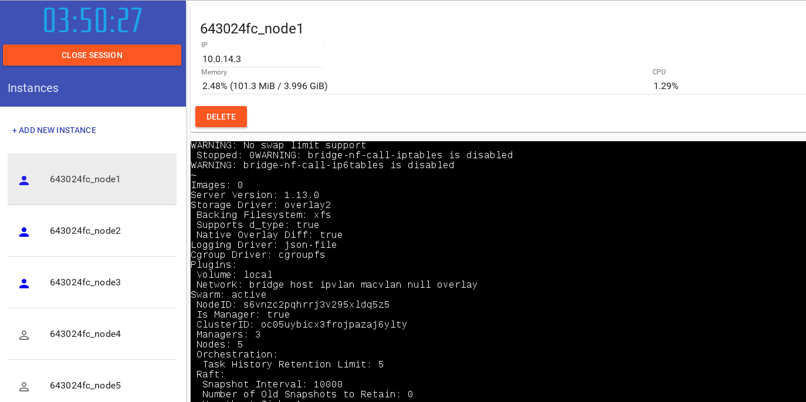
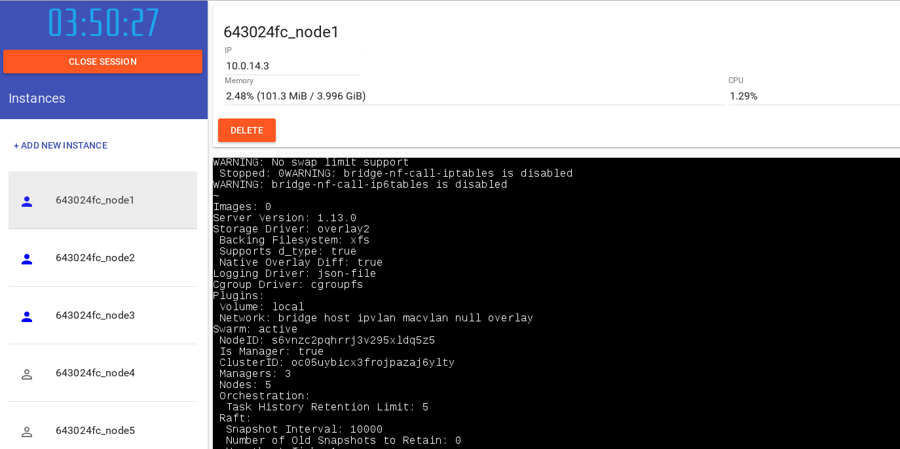

Based on Mario's gist here: https://gist.github.com/l0rd/5186cc80f8f26dc7e9490abca4405830
We will create 3 nodes using docker-machine/virtualbox.
You may see errors as below, and an error reported by "docker-machine ls", leave some time for the swmaster to settle.
In the meantime you can go ahead and create the 2 swnode's below.
bash
. ../docker1.13.0.rc
Let's cleanup any remaining machines, if they exist already ..
bash
docker-machine rm -f swmaster swnode1 swnode2
About to remove swmaster, swnode1, swnode2
Successfully removed swmaster
Successfully removed swnode1
Successfully removed swnode2
Now let's create our new nodes
bash
docker-machine create -d virtualbox swmaster
Running pre-create checks...
Creating machine...
(swmaster) Copying /home/mjb/.docker/machine/cache/boot2docker.iso to /home/mjb/.docker/machine/machines/swmaster/boot2docker.iso...
(swmaster) Creating VirtualBox VM...
(swmaster) Creating SSH key...
(swmaster) Starting the VM...
(swmaster) Check network to re-create if needed...
(swmaster) Waiting for an IP...
Waiting for machine to be running, this may take a few minutes...
Detecting operating system of created instance...
Waiting for SSH to be available...
Detecting the provisioner...
Provisioning with boot2docker...
Copying certs to the local machine directory...
Copying certs to the remote machine...
Setting Docker configuration on the remote daemon...
Checking connection to Docker...
Docker is up and running!
To see how to connect your Docker Client to the Docker Engine running on this virtual machine, run: docker-machine env swmaster
bash
docker-machine ls
NAME ACTIVE DRIVER STATE URL SWARM DOCKER ERRORS
swmaster - virtualbox Running tcp://192.168.99.114:2376 v1.13.0
bash
docker-machine create -d virtualbox swnode1
Running pre-create checks...
Creating machine...
(swnode1) Copying /home/mjb/.docker/machine/cache/boot2docker.iso to /home/mjb/.docker/machine/machines/swnode1/boot2docker.iso...
(swnode1) Creating VirtualBox VM...
(swnode1) Creating SSH key...
(swnode1) Starting the VM...
(swnode1) Check network to re-create if needed...
(swnode1) Waiting for an IP...
Waiting for machine to be running, this may take a few minutes...
Detecting operating system of created instance...
Waiting for SSH to be available...
Detecting the provisioner...
Provisioning with boot2docker...
Copying certs to the local machine directory...
Copying certs to the remote machine...
Setting Docker configuration on the remote daemon...
Checking connection to Docker...
Docker is up and running!
To see how to connect your Docker Client to the Docker Engine running on this virtual machine, run: docker-machine env swnode1
bash
docker-machine ls
NAME ACTIVE DRIVER STATE URL SWARM DOCKER ERRORS
swmaster - virtualbox Running tcp://192.168.99.114:2376 v1.13.0
swnode1 - virtualbox Running tcp://192.168.99.115:2376 v1.13.0
bash
time docker-machine create -d virtualbox swnode2
Running pre-create checks...
Creating machine...
(swnode2) Copying /home/mjb/.docker/machine/cache/boot2docker.iso to /home/mjb/.docker/machine/machines/swnode2/boot2docker.iso...
(swnode2) Creating VirtualBox VM...
(swnode2) Creating SSH key...
(swnode2) Starting the VM...
(swnode2) Check network to re-create if needed...
(swnode2) Waiting for an IP...
Waiting for machine to be running, this may take a few minutes...
Detecting operating system of created instance...
Waiting for SSH to be available...
Detecting the provisioner...
Provisioning with boot2docker...
Copying certs to the local machine directory...
Copying certs to the remote machine...
Setting Docker configuration on the remote daemon...
Checking connection to Docker...
Docker is up and running!
To see how to connect your Docker Client to the Docker Engine running on this virtual machine, run: docker-machine env swnode2
real 1m0.897s
user 0m0.670s
sys 0m0.053s
bash
docker-machine ls
NAME ACTIVE DRIVER STATE URL SWARM DOCKER ERRORS
swmaster - virtualbox Running tcp://192.168.99.114:2376 v1.13.0
swnode1 - virtualbox Running tcp://192.168.99.115:2376 v1.13.0
swnode2 - virtualbox Running tcp://192.168.99.116:2376 v1.13.0
Now that we have 3 nodes available, we will initialize our Swarm Cluster with 1 master node.
NOTE: See that we precede all docker commands with $(docker-machine config NODE) where node is the name of the node to which we want our docker client to connect to. This command returns the parameters to direct our client to the appropriate node. Run alone this produces:
bash
docker-machine config swmaster
--tlsverify
--tlscacert="/home/mjb/.docker/machine/certs/ca.pem"
--tlscert="/home/mjb/.docker/machine/certs/cert.pem"
--tlskey="/home/mjb/.docker/machine/certs/key.pem"
-H=tcp://192.168.99.114:2376
Including these parameters on the docker command line will connect the client to the docker daemon running on node 'swmaster'.
Before going further let's look at the networks on your machine.
Later, we'll see how a new network is created once the swarm cluster has been created.
bash
docker $(docker-machine config swmaster) network ls
NETWORK ID NAME DRIVER SCOPE
c7c01d8b70a3 bridge bridge local
e16375837cfa host host local
f22f49175ae7 none null local
Now let's identify the ip address of our master node.
We can see this through config or ip commands of docker-machine as shown below.
bash
docker-machine ip swmaster
192.168.99.114
We could then provide the above ip address as parameter to --advertise-addr when initializing the swarm.
However, it is quite convenient to run the above commands embedded, as below, as arguments to the swarm init command.
docker-machine config swmaster provides the parameters to use when connecting to the appropriate docker engine for our machine "swmaster".
The following command will run swarm init to generate the cluster with 'swmaster' as the Master node. You should see output similar to the below:
bash
docker $(docker-machine config swmaster) swarm init --advertise-addr $(docker-machine ip swmaster)
Swarm initialized: current node (r243hhgco052fasc7pen4v0ay) is now a manager.
To add a worker to this swarm, run the following command:
docker swarm join \
--token SWMTKN-1-41zu4a0mditg8v6fj5s5l0s596c1l34q5ifun0q3fotel5jbmr-7km3aswq6nx3coc3vq317wjak \
192.168.99.114:2377
To add a manager to this swarm, run 'docker swarm join-token manager' and follow the instructions.
A docker info should now show "Swarm: active" as below:
bash
docker $(docker-machine config swmaster) info
Containers: 0
Running: 0
Paused: 0
Stopped: 0
Images: 0
Server Version: 1.13.0
Storage Driver: aufs
Root Dir: /mnt/sda1/var/lib/docker/aufs
Backing Filesystem: extfs
Dirs: 0
Dirperm1 Supported: true
Logging Driver: json-file
Cgroup Driver: cgroupfs
Plugins:
Volume: local
Network: bridge host macvlan null overlay
Swarm: active
NodeID: r243hhgco052fasc7pen4v0ay
Is Manager: true
ClusterID: vmgj75qogu29e4xnfnno9n2n0
Managers: 1
Nodes: 1
Orchestration:
Task History Retention Limit: 5
Raft:
Snapshot Interval: 10000
Number of Old Snapshots to Retain: 0
Heartbeat Tick: 1
Election Tick: 3
Dispatcher:
Heartbeat Period: 5 seconds
CA Configuration:
Expiry Duration: 3 months
Node Address: 192.168.99.114
Manager Addresses:
192.168.99.114:2377
Runtimes: runc
Default Runtime: runc
Init Binary: docker-init
containerd version: 03e5862ec0d8d3b3f750e19fca3ee367e13c090e
runc version: 2f7393a47307a16f8cee44a37b262e8b81021e3e
init version: 949e6fa
Security Options:
seccomp
Profile: default
Kernel Version: 4.4.43-boot2docker
Operating System: Boot2Docker 1.13.0 (TCL 7.2); HEAD : 5b8d9cb - Wed Jan 18 18:50:40 UTC 2017
OSType: linux
Architecture: x86_64
CPUs: 1
Total Memory: 995.8 MiB
Name: swmaster
ID: A7MI:CIPN:M53F:W6UZ:FJKH:4P6H:SE2I:PSOE:SWOZ:I2EO:XGAX:UHW4
Docker Root Dir: /mnt/sda1/var/lib/docker
Debug Mode (client): false
Debug Mode (server): true
File Descriptors: 32
Goroutines: 124
System Time: 2017-01-25T20:22:05.60989371Z
EventsListeners: 0
Username: mjbright
Registry: https://index.docker.io/v1/
Labels:
provider=virtualbox
Experimental: false
Insecure Registries:
127.0.0.0/8
Live Restore Enabled: false
If we look at the networks we should now see new networks such as 'ingress' an overlay network and docker_gwbridge for the swarm cluster.
bash
docker $(docker-machine config swmaster) network ls
NETWORK ID NAME DRIVER SCOPE
c7c01d8b70a3 bridge bridge local
32597262f84d docker_gwbridge bridge local
e16375837cfa host host local
cysk2wkjtjca ingress overlay swarm
f22f49175ae7 none null local
Now we wish to join Master and Worker nodes to our swarm cluster, to do this we need to obtain the token generated during the "swarm init".
Let's save that token to an environment variable as follows:
bash
token=$(docker $(docker-machine config swmaster) swarm join-token worker -q)
bash
echo $token
SWMTKN-1-41zu4a0mditg8v6fj5s5l0s596c1l34q5ifun0q3fotel5jbmr-7km3aswq6nx3coc3vq317wjak
Now we can use this token to join nodes as a worker to this cluster
Note: we could also join nodes as Master, but we have only 3 nodes available.
Let's join swnode1 as a worker node
bash
docker $(docker-machine config swnode1) swarm join --token $token $(docker-machine ip swmaster):2377
This node joined a swarm as a worker.
Now we can use the same token to join node swnode2 as a worker node
bash
docker $(docker-machine config swnode2) swarm join --token $token $(docker-machine ip swmaster):2377
This node joined a swarm as a worker.
First we check for any running services - there should be none in our newly initialized cluster:
bash
docker $(docker-machine config swmaster) service ls
ID NAME MODE REPLICAS IMAGE
Now we will create a new service based on the docker image mariolet/docker-demo
We will expose this service on port 8080
bash
docker $(docker-machine config swmaster) service create --replicas 1 --name docker-demo -p 8080:8080 mariolet/docker-demo:20
z6yi30k1yqedhutcspzxisbkt
Now we list services again and we should see our newly added docker-demo service
bash
docker $(docker-machine config swmaster) service ls
ID NAME MODE REPLICAS IMAGE
z6yi30k1yqed docker-demo replicated 0/1 mariolet/docker-demo:20
... and we can look at the service as seen by the cluster:
bash
docker $(docker-machine config swmaster) service ps docker-demo
ID NAME IMAGE NODE DESIRED STATE CURRENT STATE ERROR PORTS
sac0v5i5beuj docker-demo.1 mariolet/docker-demo:20 swnode2 Running Preparing 4 seconds ago
... and we can look at the service on the individual cluster nodes.
Of course as we set replicas to 1 there is only 1 replica of the service for the moment, running on just 1 node of our cluster:
bash
docker $(docker-machine config swmaster) ps
CONTAINER ID IMAGE COMMAND CREATED STATUS PORTS NAMES
bash
docker $(docker-machine config swnode1) ps
CONTAINER ID IMAGE COMMAND CREATED STATUS PORTS NAMES
bash
docker $(docker-machine config swnode2) ps
CONTAINER ID IMAGE COMMAND CREATED STATUS PORTS NAMES
ac7f4401b6fc mariolet/docker-demo@sha256:4721f179882cd7a84c42893046be38da94b59dc4b8a3dae56277d7b7b04a96cb "/bin/docker-demo ..." 3 seconds ago Up 2 seconds 8080/tcp docker-demo.1.sac0v5i5beujxbydzq6dsix35
As we are working remotely we need to create an ssh tunnel through to the swarm cluster to access our service, exposing the port 8080 on your local machine.
We can obtain the ip address of the swarm master node as follows.
bash
docker-machine ip swmaster
192.168.99.114
So from a terminal on your laptop open the ssh tunnel to YOUR USER@YOUR SERVER
MYSERVER=10.3.222.32 MYUSER=group20
e.g. ssh group20@10.3.222.32 -L 8080:192.168.99.114:8080 -Nv
bash
MYSERVER=10.3.222.32
MYUSER=group20
ssh ${MYUSER}@${MYSERVER} -L 8080:$(docker-machine ip swmaster):8080 -Nv
OpenSSH_7.2p2, OpenSSL 1.0.2j-fips 26 Sep 2016
debug1: Reading configuration data /home/mjb/.ssh/config
debug1: Reading configuration data /etc/ssh/ssh_config
debug1: /etc/ssh/ssh_config line 58: Applying options for *
debug1: Connecting to 10.3.222.32 [10.3.222.32] port 22.
Then open your web browser at the page http://localhost:8080 and you should see a lovely blue whale, as below:
Now we can scale the service to 3 replicas:
bash
docker $(docker-machine config swmaster) service scale docker-demo=3
docker-demo scaled to 3
bash
docker $(docker-machine config swmaster) service ps docker-demo
ID NAME IMAGE NODE DESIRED STATE CURRENT STATE ERROR PORTS
sac0v5i5beuj docker-demo.1 mariolet/docker-demo:20 swnode2 Running Running 51 seconds ago
bffp3nyo685u docker-demo.2 mariolet/docker-demo:20 swmaster Running Preparing less than a second ago
de9h34g8oipr docker-demo.3 mariolet/docker-demo:20 swnode1 Running Preparing less than a second ago
Now we will see how we can perform a rolling update.
We initially deployed version 20 of the service, now we will upgrade our whole cluster to version 20
bash
docker $(docker-machine config swmaster) service ps docker-demo
ID NAME IMAGE NODE DESIRED STATE CURRENT STATE ERROR PORTS
sac0v5i5beuj docker-demo.1 mariolet/docker-demo:20 swnode2 Running Running about a minute ago
bffp3nyo685u docker-demo.2 mariolet/docker-demo:20 swmaster Running Running 11 seconds ago
de9h34g8oipr docker-demo.3 mariolet/docker-demo:20 swnode1 Running Running 9 seconds ago
bash
docker $(docker-machine config swmaster) service update --image mariolet/docker-demo:21 docker-demo
docker-demo
bash
docker $(docker-machine config swmaster) service ps docker-demo
ID NAME IMAGE NODE DESIRED STATE CURRENT STATE ERROR PORTS
sac0v5i5beuj docker-demo.1 mariolet/docker-demo:20 swnode2 Running Running about a minute ago
camjztgdrvfw docker-demo.2 mariolet/docker-demo:21 swmaster Running Preparing 1 second ago
bffp3nyo685u \_ docker-demo.2 mariolet/docker-demo:20 swmaster Shutdown Shutdown less than a second ago
de9h34g8oipr docker-demo.3 mariolet/docker-demo:20 swnode1 Running Running 19 seconds ago
bash
docker $(docker-machine config swmaster) service ps docker-demo
ID NAME IMAGE NODE DESIRED STATE CURRENT STATE ERROR PORTS
b53mbjpbq8ec docker-demo.1 mariolet/docker-demo:21 swnode2 Running Running 1 second ago
sac0v5i5beuj \_ docker-demo.1 mariolet/docker-demo:20 swnode2 Shutdown Shutdown 4 seconds ago
camjztgdrvfw docker-demo.2 mariolet/docker-demo:21 swmaster Running Running 9 seconds ago
bffp3nyo685u \_ docker-demo.2 mariolet/docker-demo:20 swmaster Shutdown Shutdown 11 seconds ago
y49fxa2bn10a docker-demo.3 mariolet/docker-demo:21 swnode1 Running Running 6 seconds ago
de9h34g8oipr \_ docker-demo.3 mariolet/docker-demo:20 swnode1 Shutdown Shutdown 8 seconds ago
Then open your web browser at the page http://localhost:8080 and you should now see a lovely red whale.

We can drain a node effectively placing it in 'maintenance mode'.
Draining a node means that it no longer has running tasks on it.
bash
docker $(docker-machine config swmaster) node ls
ID HOSTNAME STATUS AVAILABILITY MANAGER STATUS
2acz1rh2cogtd657qro9k71je swnode1 Ready Active
jvh0bcaevz9g9cgtm76hkamt0 swnode2 Ready Active
r243hhgco052fasc7pen4v0ay * swmaster Ready Active Leader
Let's drain swnode1
bash
docker $(docker-machine config swmaster) service ps docker-demo
ID NAME IMAGE NODE DESIRED STATE CURRENT STATE ERROR PORTS
b53mbjpbq8ec docker-demo.1 mariolet/docker-demo:21 swnode2 Running Running 12 seconds ago
sac0v5i5beuj \_ docker-demo.1 mariolet/docker-demo:20 swnode2 Shutdown Shutdown 15 seconds ago
camjztgdrvfw docker-demo.2 mariolet/docker-demo:21 swmaster Running Running 20 seconds ago
bffp3nyo685u \_ docker-demo.2 mariolet/docker-demo:20 swmaster Shutdown Shutdown 22 seconds ago
y49fxa2bn10a docker-demo.3 mariolet/docker-demo:21 swnode1 Running Running 16 seconds ago
de9h34g8oipr \_ docker-demo.3 mariolet/docker-demo:20 swnode1 Shutdown Shutdown 19 seconds ago
bash
docker $(docker-machine config swmaster) node update --availability drain swnode1
swnode1
and now we see that all services on swnode1 are shutdown
bash
docker $(docker-machine config swmaster) service ps docker-demo
ID NAME IMAGE NODE DESIRED STATE CURRENT STATE ERROR PORTS
b53mbjpbq8ec docker-demo.1 mariolet/docker-demo:21 swnode2 Running Running 18 seconds ago
sac0v5i5beuj \_ docker-demo.1 mariolet/docker-demo:20 swnode2 Shutdown Shutdown 21 seconds ago
camjztgdrvfw docker-demo.2 mariolet/docker-demo:21 swmaster Running Running 26 seconds ago
bffp3nyo685u \_ docker-demo.2 mariolet/docker-demo:20 swmaster Shutdown Shutdown 28 seconds ago
hbk811izheg8 docker-demo.3 mariolet/docker-demo:21 swmaster Running Running less than a second ago
y49fxa2bn10a \_ docker-demo.3 mariolet/docker-demo:21 swnode1 Shutdown Shutdown less than a second ago
de9h34g8oipr \_ docker-demo.3 mariolet/docker-demo:20 swnode1 Shutdown Shutdown 24 seconds ago
bash
docker $(docker-machine config swmaster) service ps docker-demo
ID NAME IMAGE NODE DESIRED STATE CURRENT STATE ERROR PORTS
b53mbjpbq8ec docker-demo.1 mariolet/docker-demo:21 swnode2 Running Running 20 seconds ago
sac0v5i5beuj \_ docker-demo.1 mariolet/docker-demo:20 swnode2 Shutdown Shutdown 23 seconds ago
camjztgdrvfw docker-demo.2 mariolet/docker-demo:21 swmaster Running Running 28 seconds ago
bffp3nyo685u \_ docker-demo.2 mariolet/docker-demo:20 swmaster Shutdown Shutdown 30 seconds ago
hbk811izheg8 docker-demo.3 mariolet/docker-demo:21 swmaster Running Running 3 seconds ago
y49fxa2bn10a \_ docker-demo.3 mariolet/docker-demo:21 swnode1 Shutdown Shutdown 3 seconds ago
de9h34g8oipr \_ docker-demo.3 mariolet/docker-demo:20 swnode1 Shutdown Shutdown 27 seconds ago
Now let's cleanup by removing our service
bash
docker $(docker-machine config swmaster) service rm docker-demo
docker-demo
We can check that the service is no longer running:
bash
docker $(docker-machine config swmaster) service ps docker-demo
Error: No such service: docker-demo
bash
docker $(docker-machine config swmaster) ps
CONTAINER ID IMAGE COMMAND CREATED STATUS PORTS NAMES
```bash
```


 
